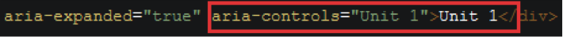
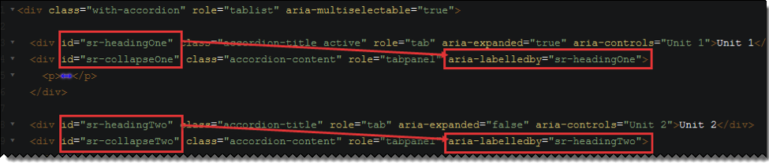

A vertically stacked list of contents on a page without losing usability by breaking lengthy contents into smaller organized sections.
To organize information with accordion, create a <div> element with the with-accordion class. Within the <div> element, two <div> elements are required with accordion-title and accordion-content respectively. Repeat these two elements for another collapse panel.
Notes: append the active class to the accordion-title class to show the initial panel on page load. The use of active class is optional for accordion.
Warning: do not use the accordion to combine multiple pages worth of content into one single page. Accordion is not meant to replace existing D2L/LMS features.
Naming the accordion tab: In the div element with the class of accordion-title you’ll need to modify aria-controls (green text) to reflect the title of the accordion (white text). The screen reader will say the text in white. In full versions of accessibility software, aria-controls creates a button in the interface and uses the text in green for the button’s text. This button will be used to toggle the accordion open and close on the accessibility software.

Adding tabs: Each inner div element must have two unique IDs, so use the following conventions when adding:
sr-headingOne and sr-collapseOnesr-headingTwo and sr-collapseTwosr-headingThree and sr-collapseThree
Important If you have two separate accordion instances on the same content page, any of the previously used IDs (sr-headingOne, sr-collapseOne, etc.) for that HTML page cannot be reused. A different set of IDs will need to be used. To avoid conflict with existing CSS IDs, prefix the value of the new ID with sr-, which stands for screen reader.
See the Pen Accordion with Arrow by Ethan Lin (@Lin87) on CodePen.
To remove the arrow on the accordion title bars, append the no-arrow class after the with-accordion class.
See the Pen Accordion with No Arrow by Ethan Lin (@Lin87) on CodePen.
Making Accordion Content Accessible
Please pay attention to the ARIA markups in the HTML.
div tag has the role attribute with the value of tablist. This is telling the screen-reader that it is about to interact with a tabbed-like user interface.div element with the class of accordion-title has the attributes of role, aria-expanded, and aria-controls with values of tab, true, and whatever you want to name the control respectively.div element with the class of accordion-content has the attributes of role and aria-labelledby with values of tabpanel and whatever you want to name the heading respectively.div elements have an unique ID. The value of this ID must match respectively to each heading or content. This is telling the screen-reader that the content is linked to the specific heading above by the association the unique ID.sr-, which stands for screen reader. Make sure to change those values after you copy and pasted them.